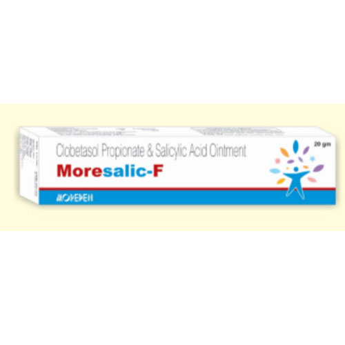

Indications:-Skin Problems
- 
Clobetasol Propionate & Salicylic Acid Ointment

Clobetasol Propionate & Salicylic Acid Ointment
OINTMENT PRESENTATION:
Clobetasol Propionate USP 0.05% w/w
Salicylic Acid IP 3% w/w

Clobetasol propionate and salicylic acid Ointment is used in adults to treat scalp psoriasis and other dry, scaly skin conditions. It reduces the swelling, itching, and redness that occur with this condition. It is also used to help remove dead skin from warts, the palms of the hands and the soles of the feet.

- Treats skin irritation and inflammation caused by burns, insect bites fungal infections and eczema.
- Psoriasis
- Skin disorder
- Alopecia areata
- Chronic discoid lupus erythematosus

Clobetasol propionate:
Clobetasol propionate used as anti-inflammatory, antipruritic agent. Clobetasol propionate is used for the treatment of moderate to severe plaque psoriasis, localized lesions(less than 10% body surface area) that have not sufficiently improved after the initial 2 week treatment with Clobetasol propionate.
Salicylic acid:
Salicylic Acid is a topical aid in the removal of excessive keratin in hyperkeratotic skin disorders, including verrucae, and the various ichthyoses (vulgaris, sex-linked and lamellar), keratosis palmaris and plantaris, keratosis pilaris, pityriasis rubra pilaris, and psoriasis (including body, scalp, palms and soles). Salicylic acid has been shown to produce desquamation of the horny layer of skin while not effecting qualitative or quantitative changes in the structure of the viable epidermis. The mechanism of action has been attributed to dissolution of intercellular cement substance.

Clobetasol propionate:
Absorption: Clobetasol propionate is absorbed through intact skin after tropical administration and the amount absorbed is depending on the type of inflammation and the amount of drug applied and the epidermal barrier (nature of skin).
Protein binding: Clobetasol propionate exerts its effect by binding to cytoplasmic glucocorticoid receptors and subsequently activates glucocorticoid receptor mediated gene expression. This results in synthesis of certain anti-inflammatory proteins, high inhibiting the synthesis of certain inflammatory mediators.
Metabolism: After topical administration, drug is metabolized primarily in the skin. The small amount absorbed into systemic circulation is metabolized primarily in the liver to inactive compounds.

- Psoriasis
- Prolonged use
- Avoid application on large surface area
- Avoid contact with eyes, mouth and mucous membrane
- Avoid occlusive dressing, or plastic damage
- This medication should not be used in children younger than 2 yrs.
- Avoid contact with eyes, mouth, or nose.
- Like many other topical acne treatments, salicylic acid must be used continuously, even after acne lesions have.

- Hypersensitivity
- Acne vulgaris
- Viral, fungal or bacterial primarily infections
- Nappy rash

Stop using shampoo and tell your doctor straight away if you notice or suspect any of the following. You may need urgent medical treatment.
- Irritation
- Sensitivity
- Excessive drying
- Redness
- Rash
- Itching

Store in a cool dry place. Protect from heat and light. Keep out of the reach of children.